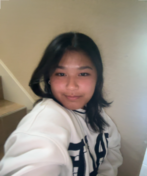

Software Developer & Data Analyst
As a Senior Computer Science student at the University of Houston, I've immersed myself in a rich learning experience. Over the past three years, I've honed my skills in various programming languages, delved into the process of game development, and explored the methodologies of data science. My career aspirations include securing a position as a software developer or data analyst upon graduation, with a long-term goal of pursuing a master's degree in data science.
In addition to my academic pursuits, I find joy in various extracurricular activities. You can often find me practicing my latte art as a barista, or indulging in my favorite hobbies. I have a passion for crocheting, reading, and playing Animal Crossing.